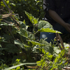
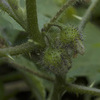
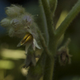
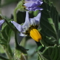
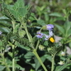
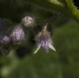

Unfold the Identity of the Unknown Plants
Steps to Identify a Plant:
- Take a Clear Photo: Ensure that the plant is the main focus of the photo. A well-lit, close-up image of the leaves, flowers, or fruits will increase the accuracy of identification.
- Upload the Image: Click the button below to upload your photo. You can select an image directly from your device. Our system supports various file formats like JPG, PNG, and more.
- Get Your Results: Once uploaded, our advanced plant identification system will analyze the image and provide you with detailed information about the plant, including its scientific name and common names.
Tips for the Best Identification Results:
- Ensure the plant is in focus and well-lit.
- Avoid taking photos in direct sunlight, as this can cause shadows and glare.
- Capture multiple parts of the plant, such as leaves, flowers, and stems, for a more accurate identification.
Identified Plant Overview:
Scientific Name: Actinodaphne macrophylla (Blume) Nees
General Name: Actinodaphne maingayi Hook.
Plant Family: Lauraceae
Location: Native to Singapore





